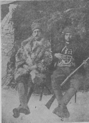

Ethem Bey efradından iki önemli isim. Sami Bey Ethem beyin yaveriydi. Üsteğmen Rıza Bey ise kurmaylar arasında yer alıyordu. Bu iki isim, Yunanlılarla yapılan görüşmelerde Ethem'in heyetini teşkil etmişti.